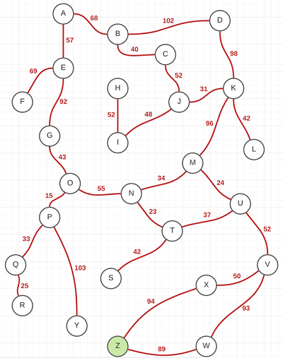
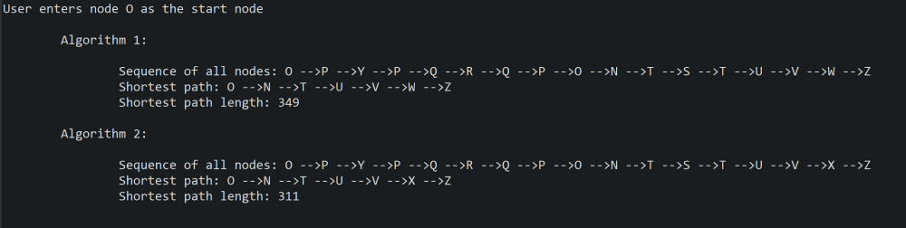
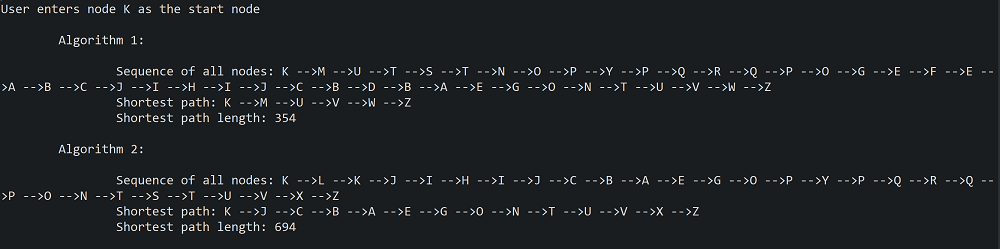

(Note: this project does not use Dijkstra's shortest path algorithm). This program uses several data structures and relies heavily on OOP principles. Data structures used: Java arrays, ArrayList, Stack, and a custom-created adjacency list graph.
The graph data is provided in a .txt file in a square matrix form, where each column/row name represents a vertex (node) on the graph and the value at the intersection of the row/column represents an edge (distance) between the nodes defined by the row name and column name. The user inputs the start node (such as A or any other available node), and the program recursively finds the shortest path to Z node using two algorithms. It prints out the traversed path, the shortest path (those may differ depending on the dead ends encountered) such as A => B => K => Z, and the total distance travelled for each algorithm. The algorithms are programmed in such a way that if they reach a dead end, they retrace the path back until they find an alternative node to follow.
The program can accommodate 26x26 size matrix input (graph), provided it is supplied in the .txt file. User input validation is included, i.e. the user cannot enter a non-existent starting point. The program can also be easily extended to specify any end vertex, not just Z. Even though this feature is not part of the original project, the program is also capable to “learn” the dead ends in the graph it encounters on the first traversal, so as to avoid them altogether starting with the second traversal, thus making it more efficient.
Consider the following graph to the left. Suppose the starting point is node O. Remember that the end point is always Z, colored green on the graph. We can easily eye ball the shortest path to be O => N => M => U => V => X => Z.
The program employs two algorithms to discover the shortest path. The first algorithm examines all nodes adjacent to the current node and chooses the one with the shortest direct distance to Z. Note that the direct distance is not reflected in the graph above. It is a linear distance from the given node to Z and is supplied in a separate file. The second algorithm examines all nodes adjacent to the current node and chooses the one with the smallest sum of direct distance and distance between the current and next node. This will become more clear with the example below. Now if I run the program I get the following output:
Now, let's examine the resulting shortest path from the first algorithm. Remember, our estimation of the shortest path was O => N => M => U => V => X => Z. Algorithm 1 gives us O => N => T => U => V => W => Z. Recall that Algorithm 1 always chooses the node with the shortest direct distance to Z, and, therefore, it chose to go from N to T (instead of M as we outlined) and from V to W (instead of X). Algorithm 2 produces this shortest path: O => N => T => U => V => X => Z. The choice of T after N is explained here by the fact that the algorithm chooses the smallest sum of two distances (direct to Z and between N and T). The calculation of shortest path length is straightforward.
Now, let's look at the total path that both algorithms took to discover the shortest path. Both of them are quite lengthy, and save for the one before the last node, they are identical. The total path for Algorithm 1 is O => P => Y => P => Q => R => Q => P => O => N => T => S => T => U => V => W => Z. The choice to go to P from O is dictated by the fact that the direct distance from P to Z is shorter than form any other node adjacent to N. The algorithm is ignorant of the fact the P can only lead to a deadend. And so it follows down to Y and then discovers that Y is a deadend and retraces its move back to P. From P it goes down to Q because the only other choice is O and it was already visited. Again, the algorithm is unaware of the fact the Q can only lead to another deadend. From Q it goes to R, discovers that it is a deadend, and retaces its moves all the way to O, the starting point. The choice here is G, N, and P. Since P has already been visited, the algorithm chooses between G and N. Since N is closer to Z in linear distance, it becomes the next node. From N it goes to T and then it has a choice between U and S. Since S is shorter in terms of its direct distance to Z, the algorithm chooses S, discovers that S is a deadend, and retraces its moves back to T. From T, the path of the algorithm is straightforward.
I mentioned earlier that my program is capable of detecting deadends and therefore making the subsequent traversals more efficient. I have not tested the program enough to make this feature available, but as soon as I complete some tests, I plan to add an update here.
Finally, let's run the program again and select another starting point, such as K.
To find the shortest path, Algorithm 1 makes a loop around the whole upper part of the graph, but eventually finds the path to Z. As one can see, finding and marking all deadends would really help making this algorithm more efficient. The same applies to Algorimth 2.